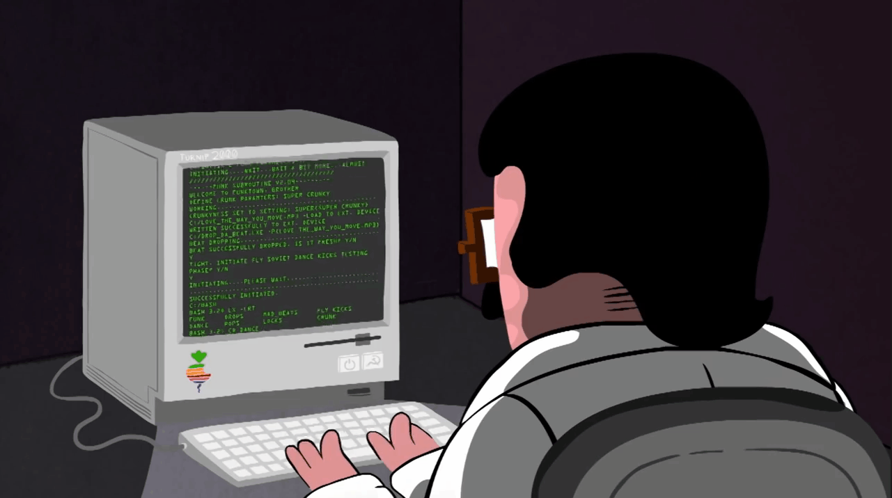

IFSP - Campus Boituva
Curso de Tecnologia e Analise e Desenvolvimento de Sistemas
Sobre
Objetivo GeralCapacitar os estudantes, por meio de um itinerario formativo interdisciplinar e prático, a atuarem na area de TI (Tecnoogia da Informatica) com as atividades de análise, projeto, desenvolvimento, gerenciamento e implantação de sistemas de informação computacionais direcionados para o mercado de trabalho corporativo.
Podem ser indentificados como objetivos especificos do curso proposto:
- Fornecer sólido domínio nas matérias de Programação, Engenharia de Software e Sistemas de Informação Aplicados;
- Propiciar outros saberes básicos, tais como arquitetura de computadores; sistemas operacionais; rede de computadores e desenvolvimento web;
- Explora, de forma enfática, o uso de recursos computacionais para o projetos e costrução de software;
- Desenvolver alguns saberes coadjuvantes, como Inglês Tecnico, comunicação e expressão e gestão de serviços;
- Possibilitar uma visão interdisciplinar dos saberes que foram transmitidos e da aplicação destes saberes no contexto profissional;
